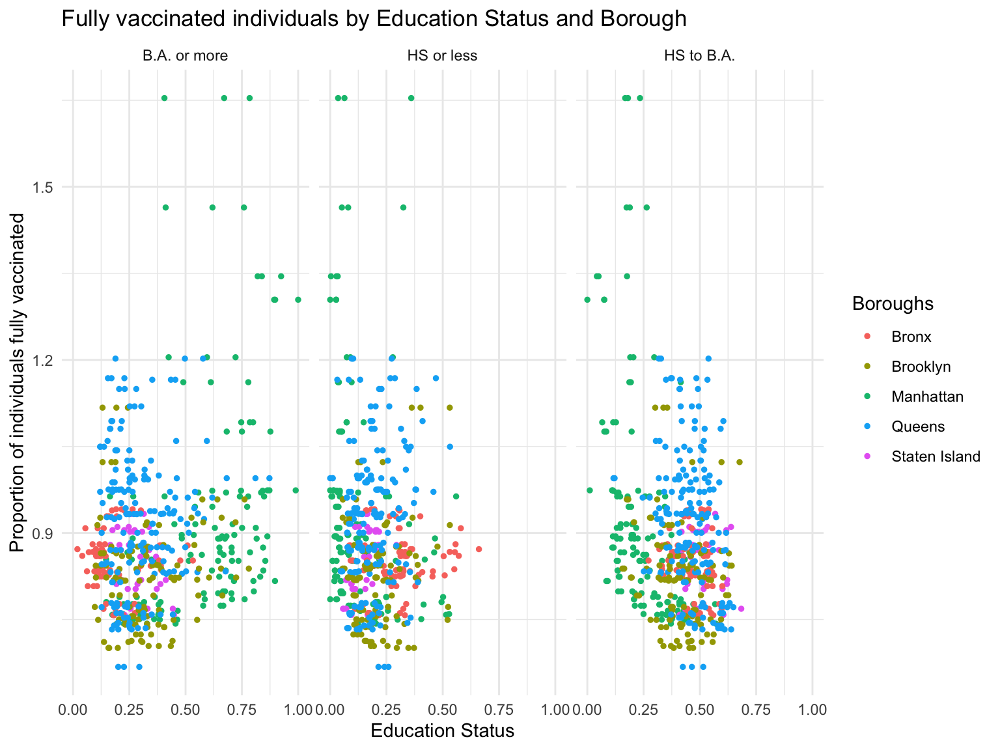

Project Report for P8105
By Brittany Shea | Erfan Faridmoayer| Niharika Telrandhe| Pooja Desai | Sabah Usmani
Project Motivation
Throughout the course of the COVID-19 pandemic, vaccine availability played a significant role in reduction of new cases, while reducing symptom severity among people who were infected. With the rise of new variants, the need for booster vaccinations with new COVID strain coverage was evident.
There were widespread reports of lack of vaccine availability in many areas, especially among those with lower socioeconomic status and limited geographic resource availability.
Given these reports, we wanted to explore the following -
- Factors that make neighborhoods in NYC vulnerable.
- Trends in vaccination - how people are vaccinated - fully (FDA approved primary series) , partially( 1-dose of FDA approved primary series) or with booster (1 complete FDA-approved primary series + additional boosters).
- How many people are actually getting vaccinated? COVID-19 vaccination and booster distribution by zip codes and boroughs in NYC as of 2022.
- Disparities in vaccine distribution with respect to geographic location, poverty status, education attainment and median income.
- Sociodemographic trends in individuals receiving complete vaccinations and boosters.
Initial Questions
Q1. What socio-demographic and geographic factors make a neighborhood vulnerable with respect to COVID-19 vaccination and boosters.
Q2. How many people were vaccinated - partially, fully and with boosters?
Q3. How education attainment, poverty status, median income was affecting vaccination and booster distribution in NYC.
Q4.Vaccination and booster distribution with respect to zip codes in NYC.
Roadblocks & General Difficulties

Roadblock 1. Zip codes vary! We realized zip codes are not the best or most reliable way to define boundaries and that they were available in a variety of formats. Not all datasets had the MODZTAs available.
Trouble-shooting We went ahead and used the modified zipcode tabulated areas of MODZTAs and you can find more information about it linked in the data sources below.
Roadblock 2. We were unable to analyze booster
uptake and distributions before 9th March 2022. The NYC COVID data only
added a column called count_additional which was a count of
everyone who received a completed FDA-approved primary series plus
additional boosters for people aged 18+ in NYC.The data did not clearly
record the initial booster rollouts for priority population before it
was approved for all above 18.
Trouble-shooting We restricted our vaccination and booster data from 9th March 2022 onwards (approximately 90 days after the booster was approved for 18+) as well as poverty status and median income in the past 12 months only to keep our analysis fresh and updated.
Roadblock 3 We were unable to find complete, reliable data for our demographic variables of interest (education status, median income, poverty status) for the same year as our vaccine data (2022).
Trouble-shooting We opted to use census data from 2020 to provide and understanding of popoulation demographics with regards to these variabales. Through there were slight differences in total populations counts, we continued with this data with the assumption that variation would be similarly distributed across all neighborhoods.
Evolution of Analytic Questions
After cleaning the data our focus shifted from the initial analysis to the following:-
Q1. How does education attainment, poverty status in the past 12 months and median income in the past 12 months affect the vaccine and booster distribution in NYC by MODTZAs and boroughs.
Q2. How many people were vaccinated - partially, fully and with boosters post 9th March 2022 by boroughs and zipcodes?
Q3. The vaccination and booster status of the proportion of individuals aged 18+ who were below the poverty level by boroughs.
Q4. How did the recent booster rollout look in NYC - the big picture.
Data
Data Sources
We used NYC Department of Health Coronavirus Data website and GitHub Data Repository:This repository contains information on COVID-19 vaccination and booster reporting across the five boroughs, updated daily, aggregated at modified zipcode tabulation areas.
Details about MODZTA can be found here and the GitHub Repository.
Along with this we used four datasets from US Census Bureau to construct our analysis of socioeconomic and demographic variables.We used the New York State census data and merged them using the NYC MODZTA.
Data Cleaning
- MODZTA and Vaccination Coverage
- Total Population
- Education Attainment
- Poverty Status
- Median income
Exploratory Data Analysis
1. The Vaccination Coverage in NYC by Zipcode and Boroughs
Fully Vaccinated Individuals by Zipcode and Boroughs:
Additional/Booster Vaccinated Individuals by Zipcode and Boroughs:
2. The Education Attainment in NYC by Vaccination Status and Boroughs
Fully Vaccinated Individuals by Education Status and Age

Additional/Booster Individuals by Education Status and Age

Fully Vaccinated Individuals by Education Status and Boroughs

Additional/Booster Individuals by Education Status and Boroughs
3. The Median Income vs Vaccination and Booster Coverage
Fully Vaccinated Individuals by Median Household Income and Boroughs

Additional/Booster Vaccinated Individuals by Median Household Income and Boroughs

4. Poverty Status vs Vaccination and Booster Coverage
Fully Vaccinated Individuals by determined Poverty Status Aged 18+
Additional/Booster Vaccinated Individuals by determined Poverty Status Aged 18+

Proportion of Adults aged 18+ with determined Poverty Status by Boroughs